Anisya
Junior Web Developer | Kecerdasan Buatan | Data Science Junior Web Developer | Artificial Intelligence | Data Science
Mengeksplorasi teknologi melalui pengembangan aplikasi, kecerdasan buatan, serta pemrosesan data terapan untuk menghadirkan solusi komputasi yang terstruktur dan berdampak. Exploring technology through software engineering, artificial intelligence, and applied data processing to deliver structured, high-integrity computational solutions.
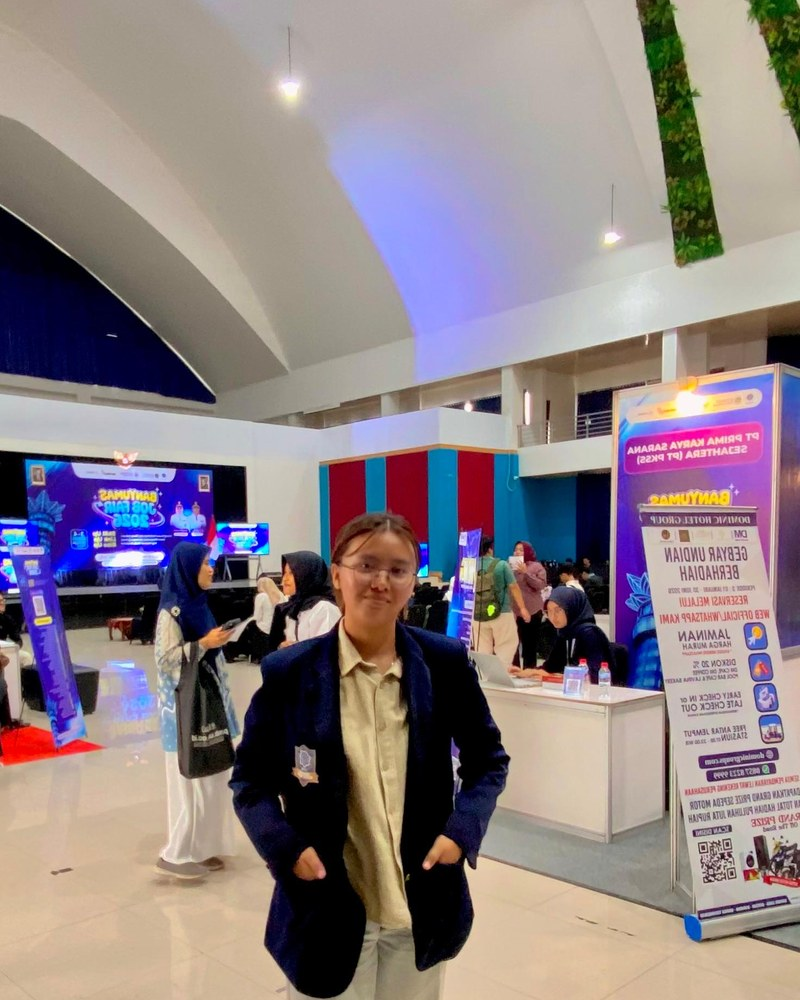
Fokus: Junior Web Development, Machine Learning, UI/UX Design Focus: Junior Web Development, Machine Learning, UI/UX Design
Tentang Saya About Me
Fondasi teknis, minat interdisipliner, dan komitmen berkelanjutan dalam dunia komputasi. Technical foundation, interdisciplinary interests, and a steadfast commitment to computational problem solving.
Saya adalah mahasiswa S1 Informatika di Universitas Harapan Bangsa dengan ketertarikan mendalam pada pengembangan perangkat lunak, sains data, dan kecerdasan buatan. Sepanjang perjalanan akademik, saya aktif mengintegrasikan konsep teoritis ke dalam implementasi praktis melalui berbagai proyek perangkat lunak dan riset terapan.
Bagi saya, rekayasa perangkat lunak bukan sekadar menulis baris kode, melainkan proses merancang solusi yang andal, efisien, dan mudah dipelihara. Saya memiliki pengalaman membangun sistem berbasis web dengan Laravel dan antarmuka responsif, perancangan basis data relasional, hingga eksperimen machine learning untuk klasifikasi teks dan data biomedis.
Saya memiliki motivasi tinggi untuk terus belajar, beradaptasi dengan teknologi baru, serta berkolaborasi dalam lingkungan profesional maupun penelitian akademik internasional.
I am an undergraduate Informatics student at Universitas Harapan Bangsa with a strong commitment to software engineering, data science, and Artificial Intelligence. Throughout my academic journey, I consistently translate theoretical foundations into robust engineering projects and empirical research workflows.
To me, software engineering extends far beyond writing code; it represents designing dependable, scalable, and human-centric systems. My technical experience encompasses developing full-stack web platforms using Laravel, designing relational database schemas, and engineering machine learning pipelines for textual sentiment mining and biomedical classification.
I bring an active dedication to lifelong learning, fast adaptation to evolving technical ecosystems, and enthusiastic participation in cross-functional industry teams and international academic inquiry.
Dedikasi Akademik Academic Rigor
Mempertahankan Indeks Prestasi Kumulatif 3.70 / 4.00 dengan fokus penguasaan struktur data, algoritma, rekayasa perangkat lunak, dan kecerdasan buatan. Maintaining a cumulative GPA of 3.70 / 4.00 with focused mastery in algorithms, software architecture, data structures, and machine learning.
Implementasi Terapan Engineering Practice
Terbiasa menerapkan metode kerja terstruktur, kontrol versi Git, pengujian fungsional API, serta dokumentasi teknis yang rapi dan dapat dipertanggungjawabkan. Grounded in disciplined Git workflows, RESTful API contract testing, clean architecture principles, and meticulous technical documentation.
Arah Masa Depan Future Outlook
Mempersiapkan diri untuk peluang magang profesional industri serta studi pascasarjana (Master's Degree) dengan fokus riset AI dan neuro-computing. Actively preparing for industry engineering internships and future postgraduate master's scholarship applications in Artificial Intelligence.
Pendidikan Education
Kualifikasi formal, institusi pendidikan tinggi, dan fondasi keilmuan informatika. Formal academic credentials, institutional affiliations, and informatics foundation.
Universitas Harapan Bangsa
S1 Informatika (Bachelor of Informatics) Bachelor of Informatics (S1 Informatika)
Menempuh studi sarjana ilmu komputer dengan penekanan pada rekayasa perangkat lunak, sistem basis data, machine learning, dan pemrosesan sinyal kognitif. Mempertahankan capaian indeks prestasi kumulatif yang konsisten dan aktif mengerjakan proyek terapan. Pursuing undergraduate computer science studies focusing on software engineering, database architectures, machine learning, and cognitive signal processing while maintaining high academic performance.
SMA Negeri 1 Bawang
Kabupaten Banjarnegara, Jawa Tengah Banjarnegara Regency, Central Java
Fondasi & Pengembangan Karakter: Foundations & Character Building:
Menyelesaikan pendidikan menengah atas dengan mengembangkan pemikiran analitis terstruktur, kedisiplinan belajar, dan keaktifan organisasi sebelum mendalami bidang teknologi komputasi. Completed senior secondary education, cultivating analytical discipline, structured communication, and collaboration prior to specializing in computational informatics.
Ijazah Sekolah Menengah Atas Senior High School DiplomaKeahlian Teknis Technical Skills
Kemampuan teknis terstruktur berdasarkan pengalaman proyek nyata dan pembelajaran akademik. Technical proficiencies organized systematically based on completed software projects and academic coursework.
Programming & Web Programming & Web
Basis Data Database
Data Science & AI Data Science & AI
Tools & Desain Tools & Design
Proyek Pilihan Selected Projects
Katalog proyek perangkat lunak, sistem pendukung keputusan, dan model machine learning yang telah dibangun. Catalog of completed software engineering, decision support systems, and machine learning models.
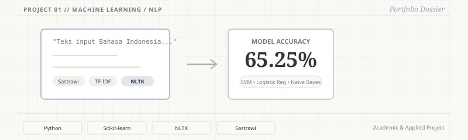
Machine Learning / NLPEmotion Classification using IndoBERT
Proyek klasifikasi emosi multi-kelas berbasis Natural Language Processing memanfaatkan pretrained model IndoBERT untuk mendeteksi emosi dari teks berbahasa Indonesia. A multi-class emotion classification project utilizing IndoBERT transformer architecture to detect nuanced affective states from Indonesian text corpora.
 ML / Pendukung Keputusan
ML / Decision Support
ML / Pendukung Keputusan
ML / Decision Support
Skincare Recommendation System (SAW + ML)
Sistem rekomendasi skincare yang menggabungkan Sistem Pendukung Keputusan Multi-Kriteria (SAW) dan Machine Learning untuk kecocokan tipe kulit. A skincare recommendation system combining multi-criteria Decision Support System (SAW) with Machine Learning to identify optimal product compatibility.
 Machine Learning / Medis
Medical Machine Learning
Machine Learning / Medis
Medical Machine Learning
Breast Cancer Classification
Notebook eksperimen Machine Learning untuk klasifikasi diagnostik kanker payudara menggunakan teknik penyeimbangan SMOTE dan Fuzzy KNN. Machine Learning research notebook for breast cancer diagnostic classification utilizing SMOTE minority oversampling and Fuzzy KNN.
 Deep Learning / Medis
Medical Deep Learning
Deep Learning / Medis
Medical Deep Learning
COVID-19 Classification using EfficientNetB0
Proyek Deep Learning untuk klasifikasi citra X-ray dada guna mendeteksi COVID-19, Normal, dan Pneumonia menggunakan transfer learning EfficientNetB0. Deep Learning research project classifying chest X-ray radiographs into COVID-19, Normal, and Viral Pneumonia utilizing EfficientNetB0 transfer learning.
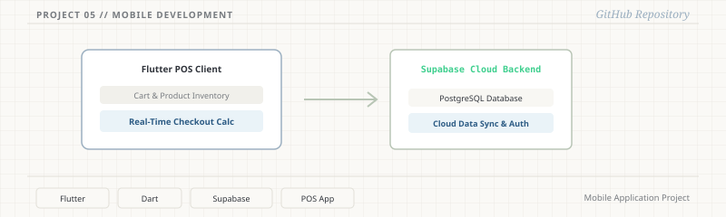
Aplikasi Mobile / POS Mobile POS AppFlutter-Kasir
Aplikasi POS mobile modern untuk pencatatan transaksi ritel, pengelolaan stok produk, keranjang belanja, dan sinkronisasi cloud dengan Supabase. A cross-platform mobile POS application streamlining retail transactions, stock management, live shopping cart calculation, and cloud sync via Supabase.
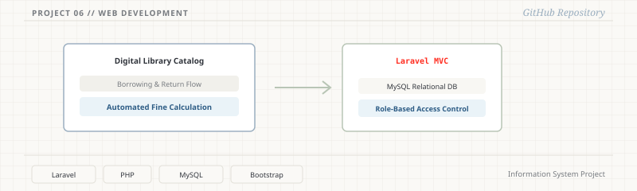
Pengembangan Web Web DevelopmentLibrary Management System
Platform manajemen perpustakaan digital untuk otomasi katalog buku, sirkulasi peminjaman, perhitungan denda keterlambatan, dan manajemen anggota. A web-based library management platform incorporating book cataloging, circulation tracking, overdue fine calculation, and role-based access.
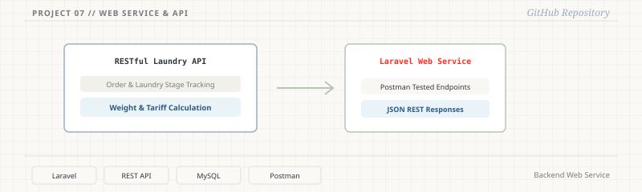
Web Service / APILaundry Management System
Sistem backend API untuk otomasi alur transaksi laundry, pelacakan status bertahap, perhitungan berat dan tarif, serta integrasi Postman. A backend RESTful API automating laundry transactional intake, multistage wash-dry-iron tracking, weight-based billing, and Postman collections.
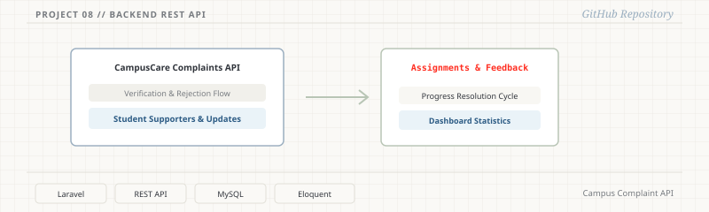
RESTful API / BackendCampusCare API
Backend API untuk sistem pengaduan fasilitas dan aspirasi mahasiswa, mencakup alur verifikasi laporan, penugasan unit, dukungan komunitas, dan progres penyelesaian. Backend RESTful API for campus facility complaints and student aspirations, featuring report verification, unit task assignments, peer support, and resolution tracking.
Pengalaman Profesional Professional Experience
Magang profesional pada badan usaha energi terbarukan di lingkungan Project Management Unit. Professional internship at a state-owned renewable geothermal enterprise within the Project Management Unit.
PT Geo Dipa Energi (Persero) — Unit Dieng
Mengikuti program magang profesional di dalam lingkungan Project Management Unit (PMU), memperoleh wawasan langsung mengenai alur kerja korporat perusahaan energi terbarukan panas bumi, memahami proses koordinasi proyek berskala besar, serta mengamati peran vital teknologi informasi dalam mendukung tata kelola dokumentasi dan operasional terpadu. Participated in a professional internship within the Project Management Unit (PMU), acquiring hands-on exposure to corporate enterprise workflows in geothermal renewable energy, understanding large-scale project coordination, and observing the role of information technology in operational documentation.
Lingkungan Profesional Enterprise Context
Pengalaman mengenal lingkungan kerja profesional dan tata kelola di perusahaan energi terbarukan. Exposure to professional standards, governance, and workflows within an energy enterprise.
Koordinasi PMU PMU Coordination
Memahami proses koordinasi aktivitas dan administrasi dokumen dalam lingkungan Project Management Unit. Understanding project coordination workflows and documentation management within PMU.
Peran TI Operasional IT in Operations
Mempelajari bagaimana sistem informasi mendukung kelancaran operasional dan koordinasi lintas bidang. Studying how information systems enhance operational documentation and cross-sector coordination.
Minat Riset Research Interests
Eksplorasi akademik pada kecerdasan buatan, analisis sinyal EEG, dan model komputasi yang dapat diinterpretasikan. Academic exploration in Artificial Intelligence, EEG signal analysis, and interpretable computational models.
"Saat ini sedang melakukan riset mengenai fenomena Face Pareidolia dengan memanfaatkan pendekatan Artificial Intelligence dan analisis sinyal EEG. Ketertarikan riset mencakup identifikasi pola aktivitas otak serta penerapan Explainable AI untuk mendukung interpretasi hasil analisis." "Currently conducting research on Face Pareidolia using Artificial Intelligence approaches and EEG signal analysis. Research interests include identifying brain activity patterns and applying Explainable AI to support the interpretation of analytical results."
Publikasi Ilmiah Scientific Publications
Artikel ilmiah terindeks hasil kolaborasi penelitian akademik di bidang Biomedical Informatics. Peer-reviewed journal publication resulting from collaborative academic research in biomedical informatics.
"Reproducible Biomedical NER and Proxy Relation Extraction for Drug–Adverse Event Analysis in Breast Cancer"
Abstrak Singkat: Penelitian ini berfokus pada evaluasi metodologi ekstraksi relasi biomedis dan Named Entity Recognition (NER) yang dapat direproduksi (reproducible) guna menganalisis hubungan sebab-akibat antara pemberian obat terapeutik dan efek samping (Drug–Adverse Event) pada dataset onkologi kanker payudara. Abstract Overview: This research investigates reproducible biomedical Named Entity Recognition (NER) and proxy relation extraction pipelines for automated analysis of drug–adverse event relationships in clinical breast cancer literature.
Sertifikasi & Pengembangan Diri Certifications & Professional Development
Dokumentasi sertifikasi bahasa, keahlian teknis terverifikasi, dan program pelatihan pengembangan diri. Verified certifications in language proficiency, specialized technical domains, and self-development summits.
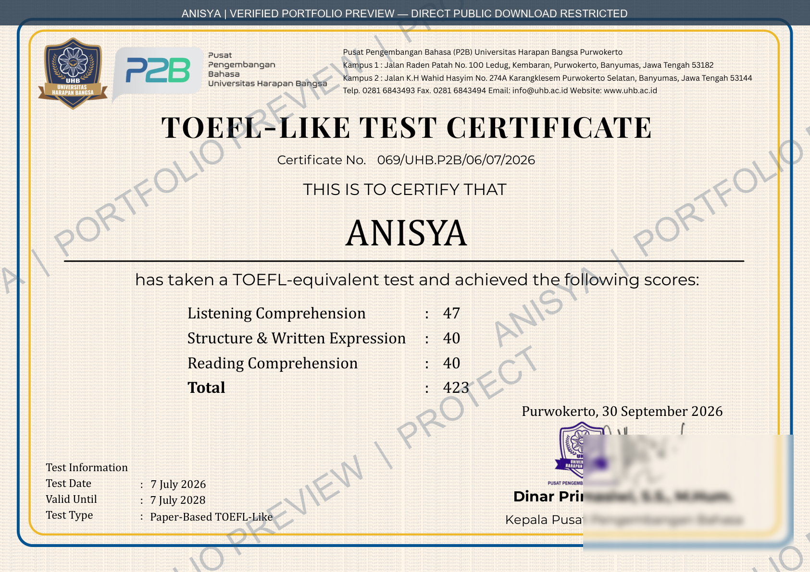
ANISYA | PORTFOLIOTOEFL-Like Test Certificate
Pusat Pengembangan Bahasa Universitas Harapan Bangsa
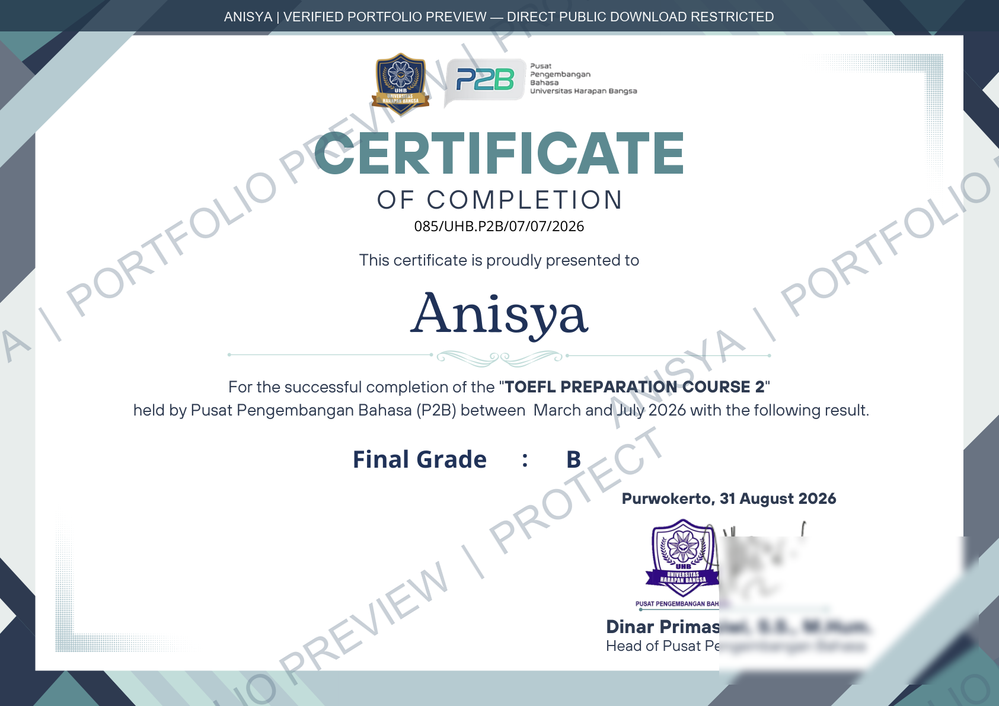
ANISYA | PORTFOLIOTOEFL Preparation Course 2
P2B Universitas Harapan Bangsa
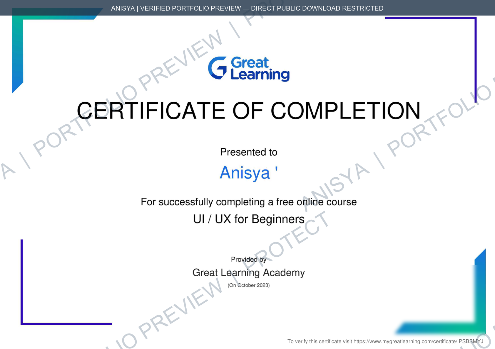
ANISYA | PORTFOLIOUI/UX for Beginners
Great Learning Academy
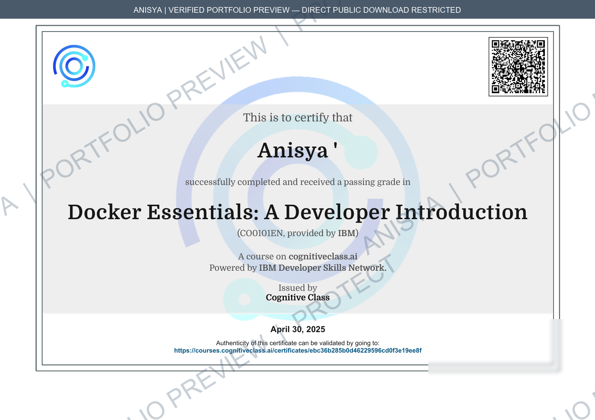
ANISYA | PORTFOLIODocker Essentials: A Developer Introduction
Cognitive Class / IBM Developer Skills Network
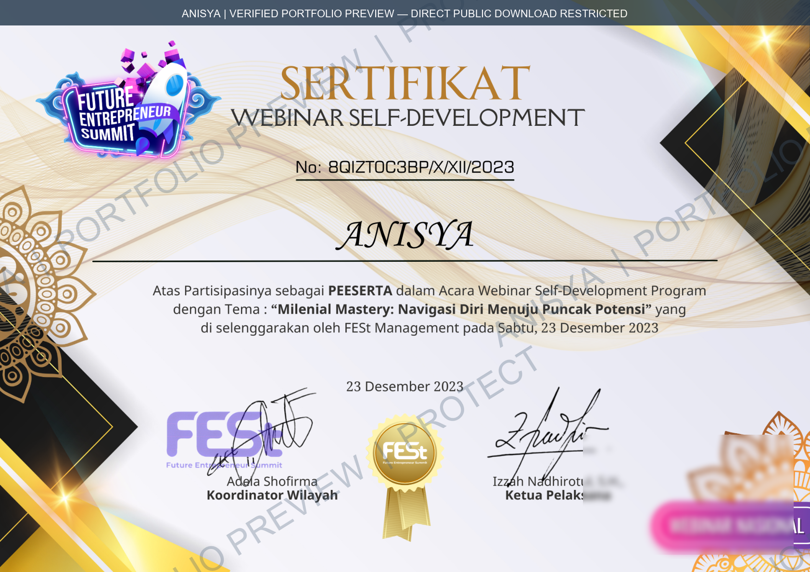
ANISYA | PORTFOLIOWebinar Self-Development — Future Entrepreneur Summit
Future Entrepreneur Summit
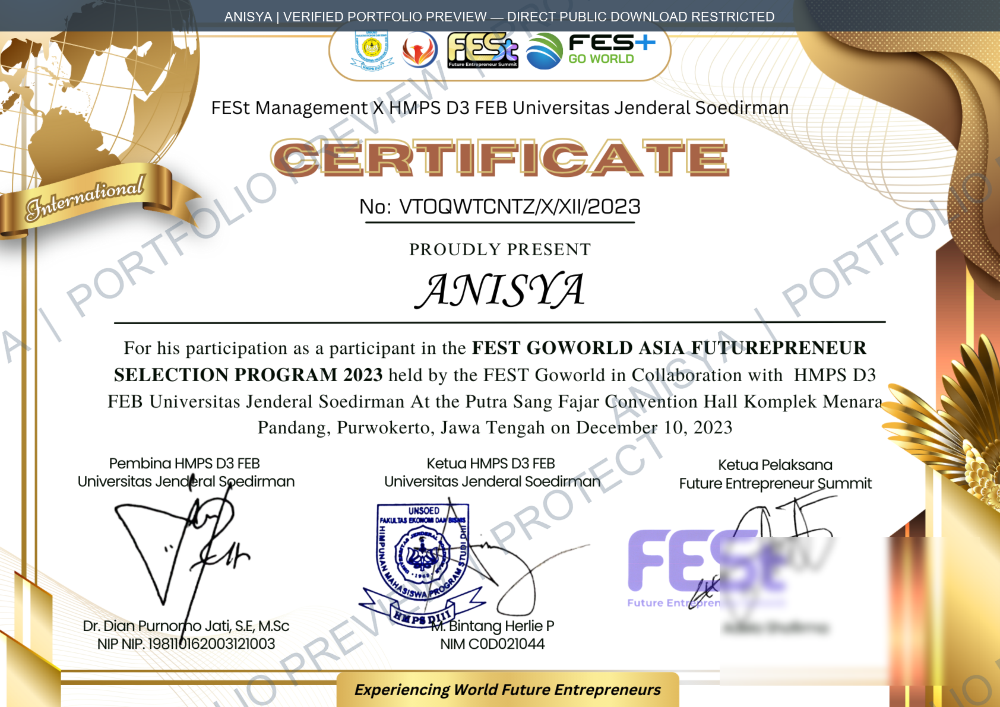
ANISYA | PORTFOLIOFEST GoWorld Asia Futurepreneur Selection Program
GoWorld Asia
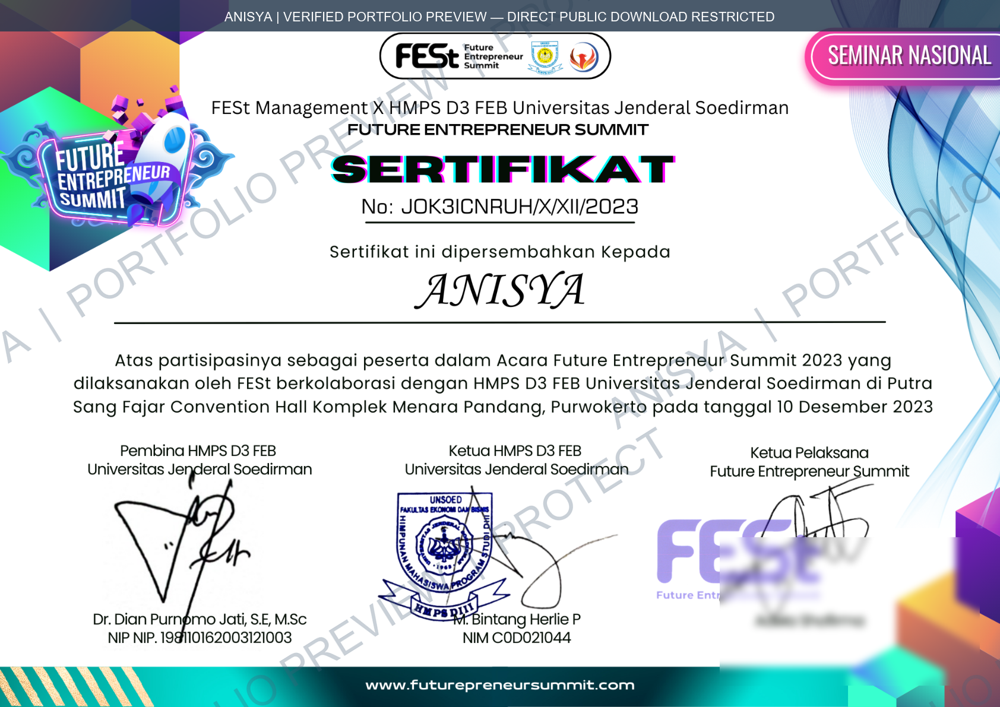
ANISYA | PORTFOLIOFuture Entrepreneur Summit 2023
Future Entrepreneur Summit Committee
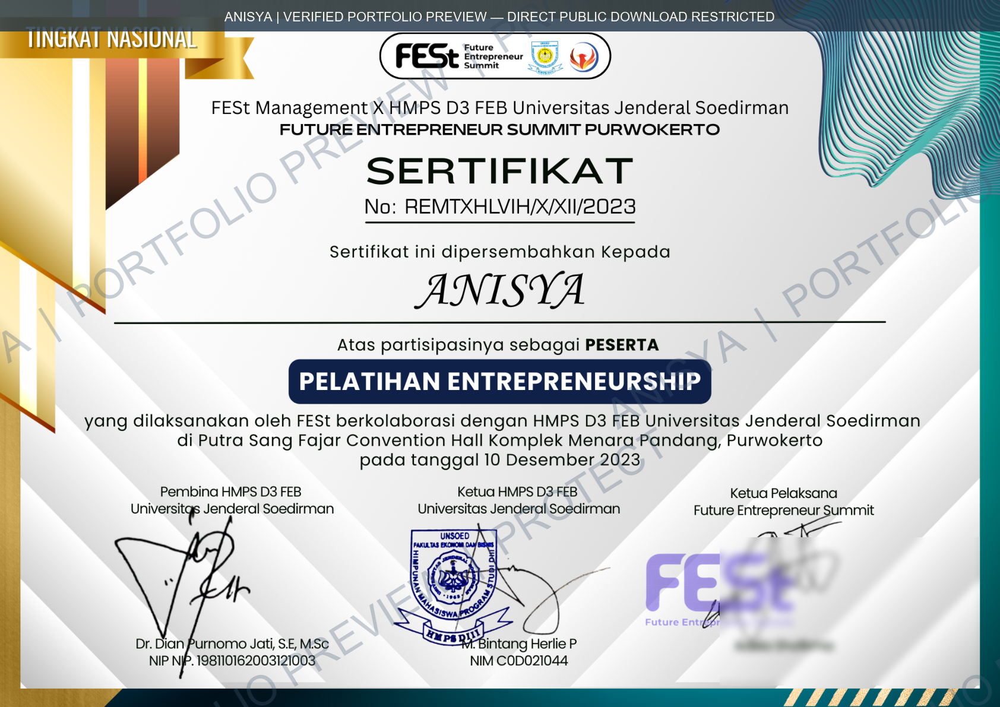
ANISYA | PORTFOLIOPelatihan Entrepreneurship
Future Entrepreneur Summit
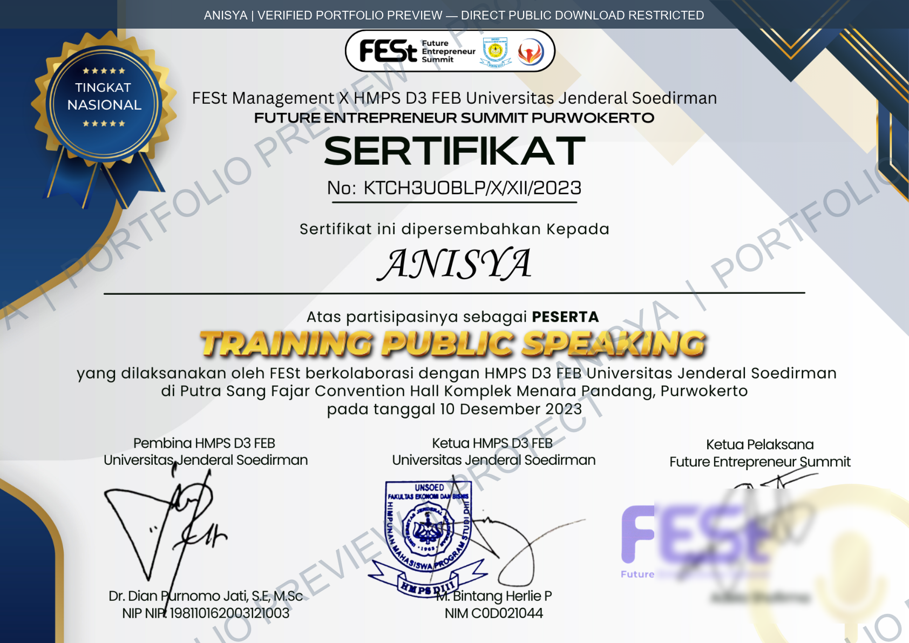
ANISYA | PORTFOLIOTraining Public Speaking
Future Entrepreneur Summit
Hubungi Saya Get in Touch
Terbuka untuk peluang magang industri, posisi rekayasa perangkat lunak, kolaborasi riset akademik, dan studi lanjutan. Open for professional internships, software engineering roles, academic collaboration, and postgraduate inquiries.
Kirim Pesan Langsung Send a Direct Message
Kirimkan pesan untuk mendiskusikan peluang magang, kolaborasi riset, atau pertanyaan profesional lainnya. Send an inquiry regarding internship opportunities, research collaborations, or general professional matters.